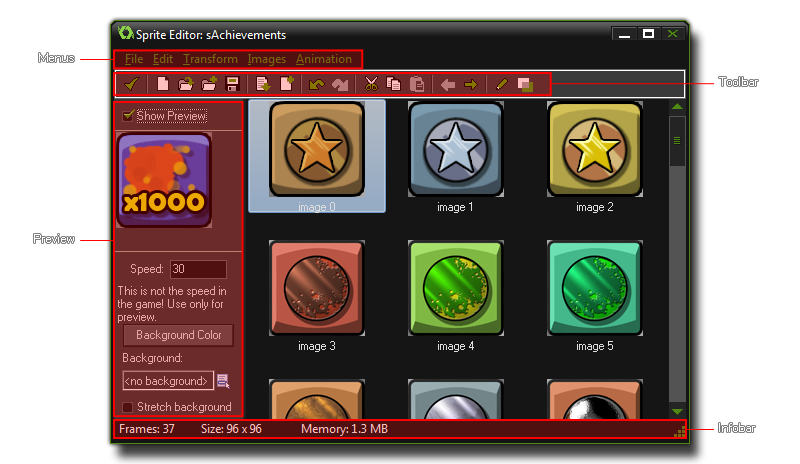
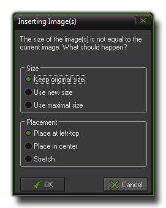
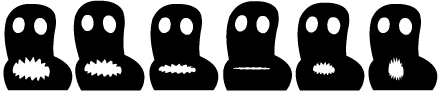

In previous sections of the manual we have seen how to load
simple sprites from files, but it is also possible to create and
modify them within GameMaker: Studio. To do this, open the
sprite property window by double clicking on one of your sprites
(or by creating a new one) and pressing the button labeled Edit
Sprite, which will open up the following window:
 The
main area of the sprite editor is taken up by the various
sub-images that make up the sprite. These sub-images all have the
same over-all size, with any smaller image having generally
transparent pixels around to make it "fit" the maximal size,
although this will depend on whether you are importing images from
a file or not (see the "File Menu" section below) and the choices
you make when doing so. The other sections are explained in more
detail below.
To get a preview of the sprite you must tick the check-box
labelled "Show Preview". This will cause the area beneath to show
an animated preview of the current sprite as well as a number of
options that affect how this preview looks, all with the aim of
getting a good idea of how a finished sprite will look when placed
in the game world. You can change the speed at which the animation
is displayed by changing the corresponding value in the box, and
you can also choose a colour for the background of the sprite (this
only affects the preview, not the actual game). Should you wish,
you can also specify a background image from your resource tree by
clicking on the "Background" menu and so get a more realistic idea
of how the sprite will look in the game, with the option of
stretching the background to fit the size of the sprite available
beneath that too. Note that these options will only be visible if
you have transparent areas in your sprite!
This bar at the bottom gives you some very basic information about the current sprite you are working with:
- Frames: The number of sub-images that the sprite has.
- Size: The width and height of the sprite.
- Memory: This is the approximate texture memory that the finished sprite will take up on any device, and is calculated as:
image_number * width * height * 4.
The toolbar contains a number buttons that allow you to change
and manipulate the position and the actual sub-images that make up
your sprite:
Confirm
This will close the sprite editor and save any changes you have made. Be aware that there are no confirmation messages asking if you want to save.
New Sprite
Click on this to create a new sprite. You will be prompted to input a base width and height. Note: This will delete all previous sprite information!
Create A Sprite From A File
This will open the standard window for loading a sprite (see Defining Sprites) . This will replace any existing sprite images with the loaded one.
Add A Sprite From A File
This will open the standard window for loading a sprite (see Defining Sprites) , which is then added to the current sprite. If the dimensions of the new sprite do not match up with the current sprite you will be shown these options: 
Save Strip
This will save your current sprite as a *.png strip, ready to be used in another game or some other animation program. Below you can see an example of an animated sprite along with the strip that GameMaker: Studio would produce when saved using this option:

Insert Empty Frame
This command simply inserts an empty frame into the list of sub-images. This frame will always be inserted before the currently selected sub-image.
Add Empty Frame
This command adds an empty frame onto the end of the current sub-images.
Undo
This will undo the last action, and you can repeatedly undo consecutive actions with this button, but note that the number of undos that can be performed is limited to 16.
Redo
If you have used the undo function, you can use this to go back to the state that you undid. This is limited to the number of undos that you have done previously.
Cut
You can use this to "cut" a sub image out of the list of sub-images. This cut image is stored to the clipboard and can then be pasted into another part of the same sprite, another sprite resource or even into some other program, independent of GameMaker: Studio. Please note that the transparencies may not be the same when pasted into another program.
Copy
This button will copy the currently selected sub-image into the clipboard for use in another place, either the same sprite, another sprite or even an alternate program.
Paste
You can use this button to paste whatever image you have previously stored in the clipboard (with cut, or copy) into the current sprite as a new sub-image. If the pasted image is larger or smaller than the current sprite, you will be shown the "Inserting Image" window (see "Add A Sprite From A File", above).
Shift Image
These buttons will move the currently selected sub-image left or right in the image order for animation.
Edit Sub-image
This button will open the GameMaker: Studio Image Editor where you can edit on a per-pixel basis the selected sub-image. More on this in the section Editing Sub-images.
Pre-Multiply Alpha
This button will pre-multiply the alpha of all sub-images of the chosen sprite. This is normally only necessary when dealing with surfaces and drawing sprites to them, or for some specific special effects and for normal sprite use you should not see any noticeable difference between the normal sprite and the pre-multiplied one. Note that this cannot be undone..
For information relating to the different menu options, please
refer to the following pages:
File Menu
Edit Menu
Transform Menu
Images Menu
Animation
Menu